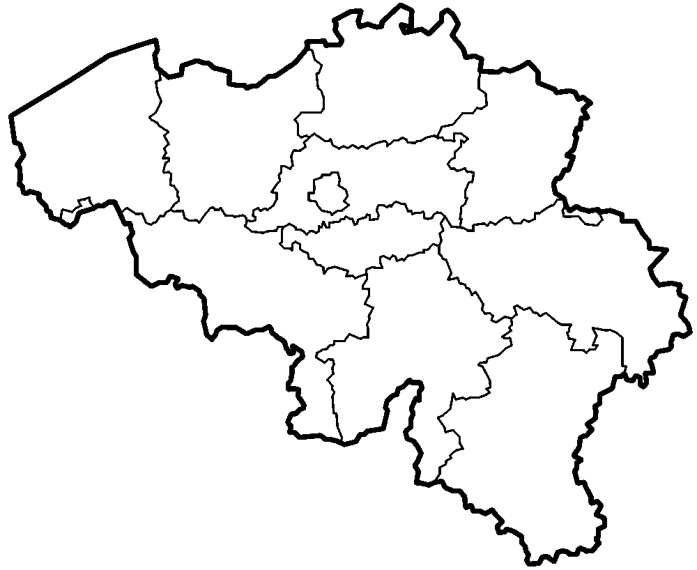

Sil Awouters
Over mij:
Mijn naam is Sil een 19 jarige graduaat student in PXL en ik volg Design.
Ik ben iemand die goed met photoshop en illustrator werkt en ik ben
klaar om hard te werken.
Ook ben ik mijn kennis aan het verbreden door nog altijd les te volgen.